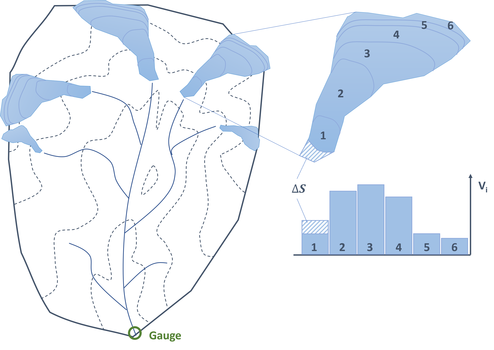

The glacier melt modeling in RSMinerve (Garcia Hernandez et al. 2020) is done (at the time of writing, March 2022) with the GSM model which features a constant area and an unlimited glacier reservoir. It is suitable for short-term simulations of glacier melt where effects of glacier volume change can be neglected but it is not well suited for climate change impact studies where substantial changes in glacier volume are to be expected. However, by assuming that discharge from snow melt can be treated independently from discharge from glacier melt, the discharge contribution from glacier melt can be simulated in R and included as source into RSMinerve models. The following chapter relies on the basic understanding of the glacier mass balance as presented and discussed in Chapter Snow and Glacier Data, describes the glacier modelling tools in the package riversCentralAsia and demonstrates how to use them for joint applied hydrological modelling with RSMinerve.
11.1 Glacier Mass Balance
We shift the focus from the catchment to one single glacier within the catchment. Instead of calculating the water balance over the river catchment, we calculate the balance over the glacier.

Figure 11.1: Simplified illustration of a glacierized river basin with elevation bands in dashed lines. The zoom is on one of the larger glaciers which can itself be discretized into elevation bands. The glacier mass loss is substracted from the lower most elevation band in increasing elevation.
\[
\Delta S = \text{ablation} + \text{accumulation}
\tag{11.1}\] where \(\text{ablation}\) denotes the ablation of glacier mass, i.e. glacier mass loss, and \(\text{accumulation}\) is the accumulation of glacier mass, i.e. glacier mass growth. Glacier ablation can be modeled using a temperature index model (described in the next section). Note that the ablation term is a negative number.
Many processes contribute to glacier ablation and accumulation, e.g. Benn and Evans (2010). The most dominant accumulation processes in high mountain areas are snow fall, avalanches and wind-blown snow. In high mountain regions, glacier ablation is driven by the energy balance at the glacier-air interface (Hock 2005). For most regional hydrological modeling tasks, is is sufficient to simplify the glacier mass balance to Equation 11.2. A glacier that is in balance will melt the equivalent of the long-term average precipitation during the warm summer months, called balance ablation (Pritchard 2019).
\[
\Delta S = P-\text{Melt} \approx Q_{\text{Gl,imbal}}
\tag{11.2}\]
where the change of water storage (\(\Delta S\)) is equal to the precipitation (\(P\)) minus the glacier melt (\(\text{Melt}\)). Since temperatures are increasing globally melt typically exceeds precipitation and we have negative \(\Delta S\), that is imbalance ablation \(Q_{\text{Gl,imbal}}\), indicating glacier storage loss. The glacier mass balance is calculated in annual time steps. We thereby refer to the hydrological year starting on October 1st of the previous year to take a full accumulation and ablation season into account.
11.1.1 Temperature Index Model
One of the arguably simplest models to describe glacier melt (or snow melt) is the temperature index model. Hock (2003) describes several variants of the temperature index model for simulating glacier melt. The riversCentralAsia package implements the simplest temperature index melt model described in (Hock 2003) in the function glacierMelt_TI (Equation 11.3), requiring only temperature time series and 2 parameters as input.
\[
M = \biggl\{ \begin{array}{l, l}
0, & T < T_{threshold} \\
f_{M} \cdot \left( T - T_{threshold} \right), & T >= T_{threshold}
\end{array}
\tag{11.3}\]
where \(M\) is the glacier melt in \(mm/d\), \(T\) is the daily average temperature in \(^{\circ} C\). The two parameters \(f_{M}\) and \(T_{\text{threshold}}\) refer to the melt factor and the threshold temperature above which glacier melt occurs and need to be calibrated. They have the units \(\frac{mm}{^{\circ} C \cdot d}\) and \(^{\circ} C\) respectively. Glacier melt is calculated in daily time steps.
11.2 Glacier Volume Development
As glaciers melt, their volume changes. This has to be taken into account for the long-term simulation of glacier discharge. To determine the initial glacier volume, the area of the geometry of the Randolph Glacier Inventory (RGI) v6.0 data set is multiplied with the average thickness of the glacier (the Farinotti data set). From the combination of these two data sets, the well established area-volume relationship by Erasov (1968) can be verified (see section on Area-Volume scaling). Please note that the data and the retrieval of the data are described in Part II of this book.
11.3 Area-volume scaling
The best known scaling relationships for Central Asian glaciers is the Erasov scaling function (Equation 11.4).
Where \(A\) is the glacier area in \(km^2\) and \(V_{\text{Erasov}}\) is the glacier volume in \(km^3\).
The following code snippet shows how the area volume relationship is re-fitted using the glacier outlines from RGI v6.0 and the glacier thickness data set by Farinotti et al. (2019).
# Loading the necessary librarieslibrary(sf, quietly =TRUE)
Linking to GEOS 3.11.0, GDAL 3.5.3, PROJ 9.1.0; sf_use_s2() is TRUE
── Conflicts ────────────────────────────────────────── tidyverse_conflicts() ──
✖ tidyr::extract() masks raster::extract()
✖ dplyr::filter() masks stats::filter()
✖ dplyr::lag() masks stats::lag()
✖ dplyr::select() masks raster::select()
ℹ Use the conflicted package (<http://conflicted.r-lib.org/>) to force all conflicts to become errors
Attaching package: 'gridExtra'
The following object is masked from 'package:dplyr':
combine
library(broom, quietly =TRUE)devtools::install_github("hydrosolutions/riversCentralAsia", quiet =TRUE)library(riversCentralAsia, quietly =TRUE)# Load the RGIv6.0 data set of the RGI region of Central Asiargi<-st_read("../caham_data/central_asia_domain/glaciers/RGIv60/13_rgi60_CentralAsia.shp", quiet =TRUE)|>sf::st_make_valid()rgi<-rgi|>dplyr::select(RGIId)|>mutate(Area_m2 =as.numeric(st_area(rgi)))
# To extract the data for the entire Central Asian # region takes a several hours on a recent personal computer. # Get a list of the glacier thickness maps from Farinotti and Hussglacier_thickness_dir<-"<local_path_to_adapt>/FARINOTTI_Glacier_Thickness/composite_thickness_RGI60-13/RGI60-13/"filelist<-list.files(path =glacier_thickness_dir, pattern =".tif$", full.names =TRUE)# Filter the glacier thickness file list for the glacier ids in the RGI data set # (if a subset is to be analysed). #filelist <- filelist[sapply(rgi$RGIId, grep, filelist)]# Get the mean glacier thickness for each of the glaciers in filelist. glacier_thickness<-NULLres<-NULLfor(glacierinc(1:length(filelist))){rgiid<-str_extract(filelist[glacier], "RGI60-13.\\d{5}")rast<-raster(filelist[glacier])temp<-exact_extract(rast, rgi$geometry[rgi$RGIId==rgiid], fun =c("weighted_mean", "weighted_sum"), weights ="area")|>mutate(RGIId =rgiid)glacier_thickness<-rbind(glacier_thickness, temp)}glacier_thickness<-glacier_thickness|>rename(Vice_s_m3 =weighted_sum)save(glacier_thickness, file ="../caham_data/central_asia_domain/glaciers/Farinotti/glacier_thickness_extractedRGIreg13.RData")
# Load the average glacier thickness per glacierload("../caham_data/central_asia_domain/glaciers/Farinotti/glacier_thickness_extractedRGIreg13.RData")rgi<-rgi|>left_join(glacier_thickness|>dplyr::select(RGIId, weighted_mean), by ="RGIId")|>rename(thickness_m =weighted_mean)|>mutate(Volume_m3 =Area_m2*thickness_m)# Prepare the data for curve fitting. Exclude Fedchenko glacier as it is # so much larger than all other glaciers in RGI region 13. data<-rgi|>st_drop_geometry()|>dplyr::select(RGIId, Area_m2, thickness_m, Volume_m3)|>mutate(Area_km2 =Area_m2*10^(-6), Volume_km3 =Volume_m3*10^(-9))|>dplyr::filter(Area_km2<200)|>drop_na()# Fit a model of similar shape as Erasovs area-volume relationship. # V = 0.027 * A ^1.5# Note: We use the inverse of the glacier area to weight the fitting to not # favor glaciers with large areas in the fit. nlVAw<-nls(Volume_km3~a*Area_km2^b, data =data, weights =1/data$Area_km2, # start =list(a =0.05, b =1.2))# Add the modeled volume to the "observed" volume. data_nlVAw<-data|>mutate(.fitted =augment(nlVAw)$.fitted, Volume_RGIF_km3 =.fitted, Volume_Erasov_km3 =glacierVolume_Erasov(Area_km2))
Figure 11.2: Glacier volume and glacier area estimated with different methods.
Figure 11.2 shows the glacier volume estimate with different methods vs. the glacier area. The two functions perform similarly for small glaciers, i.e. Erasov is still valid. For large glaciers the two parameter sets differ. However, the uncertainties of the glacier volume estimates are larger than the difference between the two functions so Erasov can still be considered to be valid also for larger glaciers though we use the RGIF fit here which is based on more and newer data.
Based on the large data set, the empirical glacier area-volume relationship based on the RGI v6.0 glacier outlines and the glacier thickness by Farinotti et al. (2019) may be more suitable for large glaciers in Central Asia.
\[
V_{\text{RGIF}}= a \cdot A^{b}
\tag{11.5}\]
With \(A\) being the glacier area in \(km^2\), \(V_{\text{RGIF}}\) beging the glacier volume in \(km^3\), and the parameters \(a=\) 0.0388 and \(b=\) 1.262. The newly fitted scaling relationship is implemented as glacierVolume_RGIF in the package riversCentralAsia, the Erasov scaling relationship is implemented as glacierVolume_Erasov.
The area-volume scaling by Erasov and the area-volume scaling with updated parameters (RGIF) can be reversed. Thereby it is possible to update the glacier area as a function of the glacier volume.
\[
A = \exp \Bigg( \frac{\log V - \log a}{b}\Bigg)
\tag{11.6}\]
where \(V\) is the glacier volume in \(km^3\) and \(A\) is the glacier area in \(km^2\). The parameters \(a\) and \(b\) are the parameters of the Erasov scaling function or the RGIF scaling function. The equations are implemented in the riversCentralAsia package as glacierArea_Erasov and glacierArea_RGIF respectively.
11.4 References
Benn, Douglas I., and David J. A. Evans. 2010. Glaciers & Glaciation. 2nd ed. London: Hodder education.
Cogley, J. Graham, Regine Hock, B. Rasmussen, A. Arendt, A. Bauder, Roger J. Braithwaite, P. Jansson, et al. 2011. “Glossary of GlacierMassBalance and Related Terms.” 86. Paris: UNESCO-IHP.
Erasov, N. V. 1968. “Method for Determining of Volume of Mountain Glaciers.”MGI, no. 14: 307–8.
Farinotti, Daniel, Matthias Huss, Johannes J. Fürst, Johannes Landmann, Horst Machguth, Fabien Maussion, and Ankur Pandit. 2019. “A Consensus Estimate for the Ice Thickness Distribution of All Glaciers on Earth.”Nature Geoscience 12 (3): 168–73. https://doi.org/10.1038/s41561-019-0300-3.
Garcia Hernandez, J., A. Foehn, J. Fluixa-Sanmartin, B. Roquier, T. Brauchli, J. Paredes Arquiola, and De Cesare G. 2020. “RS MINERVE - Technical Manual, V2.25.” ISSN 2673-2661. Switzerland: Ed. CREALP.
———. 2005. “Glacier Melt: A Review of Processes and Their Modelling.”Progress in Physical Geography: Earth and Environment 29 (3): 362–91. https://doi.org/10.1191/0309133305pp453ra.
Pritchard, Hamish D. 2019. “Asia’s Shrinking Glaciers Protect Large Populations from Drought Stress.”Nature 569 (7758): 649–54. https://doi.org/10.1038/s41586-019-1240-1.